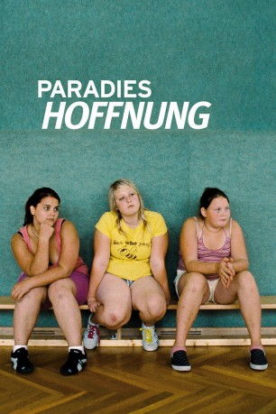

#3041 Paradies 3 - Hoffnung
Alternativ: Paradise: Hope (Originaltitel)
 
 IMDB-Wertung: 6.7 / 10
IMDB-Wertung: 6.7 / 10  Metascore: 78
Metascore: 78 
Teresa fliegt nach Kenia, um sich zu entspannen und sich vielleicht zu verlieben. Ihre Tochter Melanie verbringt ihre Ferien in einem Diät-Camp im Wechselgebirge. Sport, Ernährungsberatung und wilde Kissenschlachten mit anderen Jugendlichen gehören zu ihrem Ferien-Alltag, aber auch Frust wegen des eigenen Körpers und Langeweile. Sie raucht die erste Zigarette ihres Lebens und trifft auf ihre erste große Liebe: einen 40 Jahre älteren Arzt. Der Arzt leitet das Camp und lässt die Schwärmerei des Mädchens zu, auch wenn er weiß, dass dieses Verhältnis nicht sein darf. Teresa will den älteren Mann um jeden Preis verführen und ist verzweifelt, als sie an die Grenzen ihrer Möglichkeiten stößt. Sie ist hin- und hergerissen zwischen der Leidenschaft zu dem Arzt, von dem sie sich Zuneigung erhofft, und dem beträchtlichen Altersunterschied zwischen ihnen beiden.
Jahr: 2013
Dauer: 91 Minuten
FSK: 12
Land: Österreich Studio: Neue Visionen FilmverleihTonspuren:
Untertitel: Deutsch,
Auflösung: 1080p (1920x1040) Größe: 6717 MB
Genre: Drama
Regisseur: Ulrich Seidl
Drehbuch: Ulrich Seidl, Veronika Franz
Soundtrack:
Darsteller:
- Melanie Lenz als Melanie
- Verena Lehbauer als Verena
- Joseph Lorenz als Arzt
- Michael Thomas als Sporttrainer
- Viviane Bartsch als Ernährungsberaterin
- Maria Hofstätter als Tante Melanie
- Arabel Aigner als Diätcamp Kind
- Vanessa Ecker als Diätcamp Kind
- Ines Götz als Diätcamp Kind
- Alexia Greimel als Diätcamp Kind
- Tobias Kasper als Diätcamp Kind
- Renee Marat als Diätcamp Kind
- Sebastian Mertel als Diätcamp Kind
- Julia Metzner als Diätcamp Kind
- Christoph Miko als Diätcamp Kind
- Katharina Ocenasek als Diätcamp Kind
- Samantha Schulz als Diätcamp Kind
- Simon Vorgatsch als Diätcamp Kind
- Cornelia Winkler als Diätcamp Kind
- Leopold Schiel als Disco Besitzer
- Rainer Luttenberger als Disco Bursche
- Hannes A. Pendl als Disco Bursche
- Johanna Schmid als Hanni
Datei: X:\3-Trilogie(N-Z)\Paradies\Paradies 3 - Hoffnung (2013, FSK12, 1920x1040).mkv seit 19.01.2016
Festplatte: HD Collection-3(N-Z)-6(A-Z)
 Alle Filme aus Gruppe '3-Trilogie(N-Z)\Paradies'
Alle Filme aus Gruppe '3-Trilogie(N-Z)\Paradies'